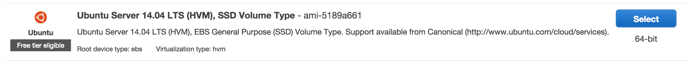
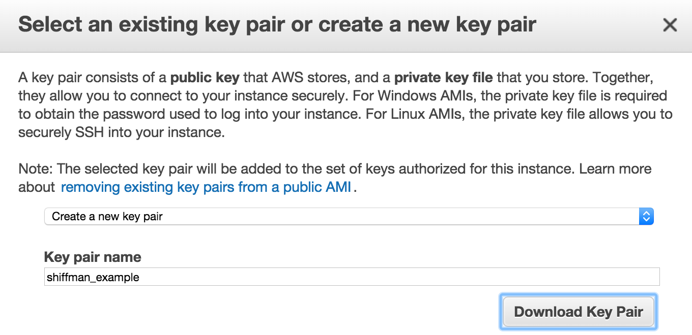
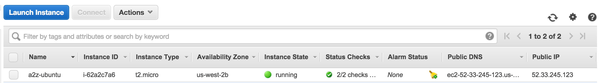
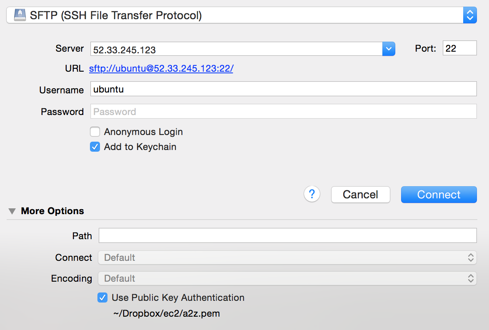

Select “Ubuntu Server 14.04 LTS (HVM), SSD Volume Type - ami-5189a661”. (You are welcome to use others, but this one worked for me to run both node and Java.)

Pick “General Purpose” (free tier micro)
Select “Review and Launch”
Launch!
You’ll then see a prompt about your “key/pair”. The key pair consists of a public key that AWS stores, and a private key file that you store. They come together in a file “something.pem” which you will need in order to login to your account. Select “create new pair” and enter a title for your key/pair.

Select “Download Key Pair”. The file will download to your computer. Save this file! You’ll need it for future steps.
Now click “Launch Instances”.
Now you should see a message that “Your instances are launching” (it may take a few minutes before they are available.)
Select “View Instances”.

You should see your instance listed like above. Now it’s time to connect!
Navigate terminal to the directory where you have your “pem” file. First you must make sure your key is not “publicly” viewable. This has to do with file permissions.
$ chmod 400 yourkeyfile.pem
Login using the key with the following command:
$ ssh -i "yourkeyfile.pem" ubuntu@52.33.245.123
Replace “52.33.245.123” with your “public IP” as shown in your EC2 console.
Your terminal should then show that you have connectd.
Install the node package dependencies (specified in your package.json file):
$ npm install
Upload your node application to the server. You can do this with SFTP software like Cyberduck. The key is selecting “Use Public Key Authentification” rather than enter a password. See the configuration below.

Once your files are uploaded you’ll want to check and make sure your bot works, i.e.
$ node bot.js
The bot will only run while you have terminal open. In order for it to run after you’ve logged out of your EC2 instance and closed your computer, you can use a node module called “forever”.
Instead of using processing-java you can simply export your Processing sketch as a linux application from the PDE itself. You’ll end up with a “application.linux64” folder which is what you’ll want to include with your node app and upload. The node code can then instead be:
// You could use 'pwd' to determine the absolute pathvarcmd='folder/sketchname';exec(cmd,processing);
If your sketch needs to read from, or write to, the server, you may need to change the file permissions to allow it read/write. For example, with a linux application, cd into the application the folder and type:
sudo ./'your_applications_name'
If the application ran successfully, you should see the console output, provided you sketch has any. If not: